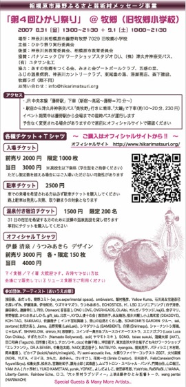

L'MANA Past LIVE 2007
６月２３-２４日 Saturday Sunday
いま、世界から注目されている青森県の六ヶ所村。
ここは、でっかい空と大地が広がるとても美しいところです。
景色だけじゃなく、食べ物もおいしく、すてきな人々が暮らしています。
そんな六ヶ所へ、遠いけれどいろんな人たちに、いちどは来て欲しい。
そのいい機会として、“アースデイ六ヶ所”は開催されます。
いろんな人…いろんな思いの人、いろんな考えの人、いろんな笑顔が、
いろんなところから１カ所に集まれば、きっと
すっごく楽しいことがおきるはず、そんなことを願って。
だから、世界中のどこでもなく——
１ヶ所で
会おう！
アースデイ六ヶ所
ｅａｒｔｈ ｄａｙ ＲＯＫＫＡＳＨＯ ２００７
日時：２００７年
６月２１日 WALK9（出雲からのウォーク）吹越烏帽子到着
６月２３日（土）→完全アンプラグド（電気無し）デイ・キャンプイン可
６月２４日（日）→電気有り、ライブデイ
会場：六ヶ所村 大石総合運動公園 （原燃PRセンター向かい）
参加費：無料
主催：アースデイ六ヶ所実行委員会
事務局：青森県上北郡六ヶ所村 野辺地町観音林脇 えぼし荘 10号室
TEL：080-6005-4327（事務局）／ MAIL: earthday6kkasho@gmail.com
http://www.rokkasho-rhapsody.com/ 六ヶ所村ラプソディー オフィシャルウェブサイト
http://stop-rokkasho.jp/ ストップロッカショ.jp
http://walk9.jp/index.html walk9 ホームページ
LIVE の出演は ２３．２４日の２日間 です. *
MEENA 単身で参加予定ですが もしかしたらHARISH も参加できるかもしれません
５月３０- ３１日 Wednesday Thursday
Dance for Peace Japan 2007 in HAMAMATU

☆Live Artists:
Koh-Tao (World Music),
Yole Yole (Acoustic JamUnit),
Keniti Yamakita (Solo Percussionist),
Cinnabom(Psychedelic Bossa Band),
Morning Set (Tribal Jam Duo), Rise Factory (Jam Band),
Kiyoshi Suzuki (Karimba Solo).
Payaka楽団 with Silent Running(Progressive Jam Band),
Jun Makino(Crystal Bowls & Vocalist),
L’mana(Acoustic Ambient),
Ca-zoku(spiritual Dance & Music) and more...
L’mana 出演は ３０日の２時頃 予定


ALIVE!
〜いのちのちから だいちのこどう〜
Sponsoring:湘南ALIVE!
８月１２日（日） 湘南台文化センター
Ticket: 1000YEN
全席自由／再入場可
（小学生以下無料）


第４回ひかり祭り
２００７年８月１１、１２日（金 土）
Live!
2007／4／9 月 吉祥寺 アムリタ食堂 月曜ライブ
Start 1st 19:30 2nd 20:30
アムリタ食堂 Web Site http://cafeamrita.jp/
おいしいタイ料理を食べながらライブを楽しんで下さい＊
チャージはないので 投げ銭 よろしくです＊
遠い記憶のアムリタに包まれ
青い星で夢を見る
魂の源に憶いをはせて。 * ・ 。 *
L'mana Live info
４月１４日(土） RAVER'S cafe @千葉 OPEN 19:00 CLOSE ???
Tel:050-7536-8675 千葉市緑区平山町１９３３
春のスペシャルパーティー！
"レイバーズホームパーティー " ENTRANCE FREE!!
mixihttp://mixi.jp/view_community.pl?id=428094
森のそばにひっそり佇むパワースポット「RAVER'S cafe」
ここには人生を楽しんでる面白い大人たちが集まります。
遊び上手で鼻の利く素敵な人たちです。
レイバーズカフェはそのような、いつも楽しいことを考え、求めている人の為にある自由な空間です。
レイバーズカフェのホームページ
（イベントのページに隠しボタンがあります）
http://homepage2.nifty.com/raverscafe/
いろいろとお祝い事が重なったパーティーで L'manaは22:00あとにLiveをやります
間際の告知になってしまいましたが 近くの方や 興味のある方は 遊びにきて下さい。
Meena&Harish